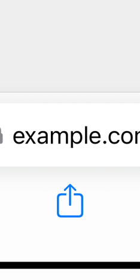
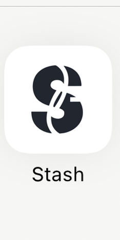

How to easily stash
Save from any app: tap Share, then Stash.
Step 1
Tap Share

In Safari — or any app — tap the Share button.
Step 2
Pick Stash

Choose Stash in the share sheet.
Step 3
Add a note, save

Add an optional note, then Save. Stash does the rest.